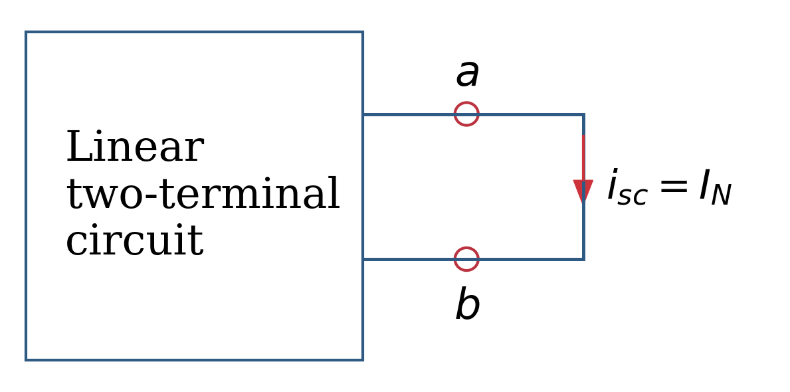
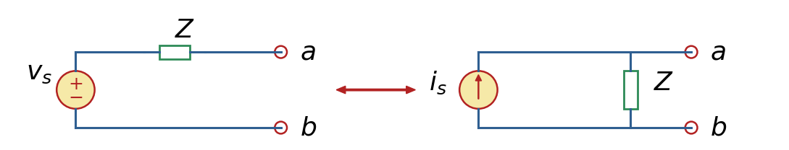

Norton Equivalent#
The American Engineer, E. L. Norton published in 1926 a theorem similar to Thévenin’s Theorem, which he called Norton’s Theorem [AS13].
The Norton resistance \(R_N\) equals the Thevenin resistance \(R_{TH}\), and can be found in the same way.
A linear two terminal circuit in the figure nelow represents a one port (two terminal) network.
The voltage of the port is \(V_{ab} = V_a - V_b\) and the current entering the port is \(i_{ab}\) When the terminals are shorted, \(V_{ab}=0\) and the resulting current is the short-circuit current

You do not know what is inside. If we only have access to terminals a and b, the admittance, Y \(\big(=\frac{1}{Z}\big)\), can be determined by:
Apply a voltage V between a and b.
Measure the current I flowing into the circuit.
Compute
That ratio is the input admittance or driving-point admittance.
If we already have found the Thévenin equivalent circuit, a Norton equivalent can be found by source transformation.
Two sources (or circuits in general)
are said to be equivalent
if they have the same i-v relationship
at a pair of terminals.
